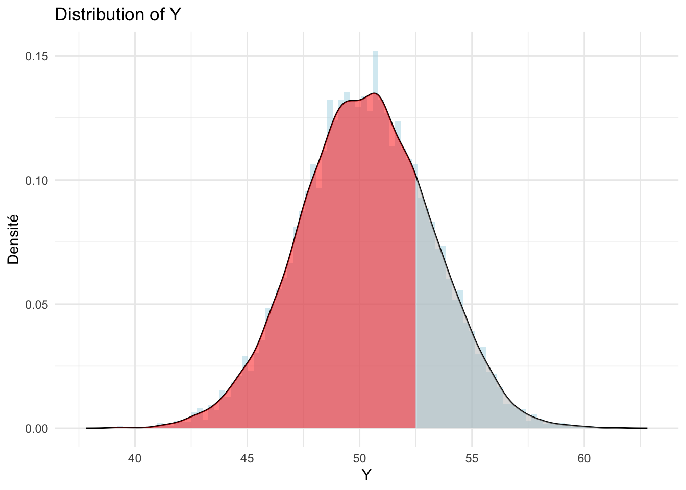
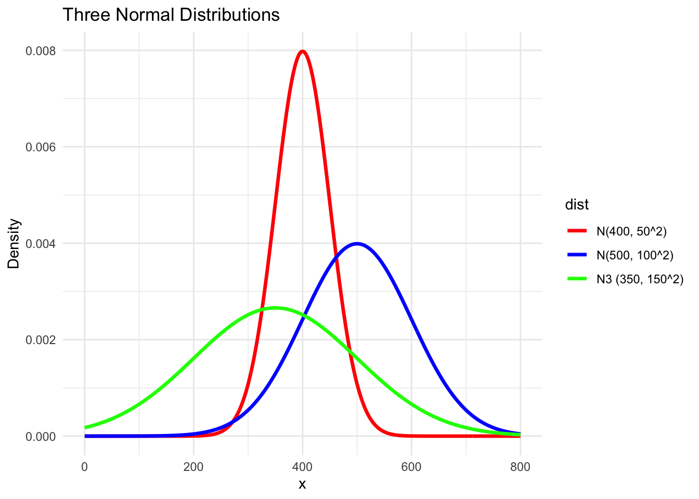
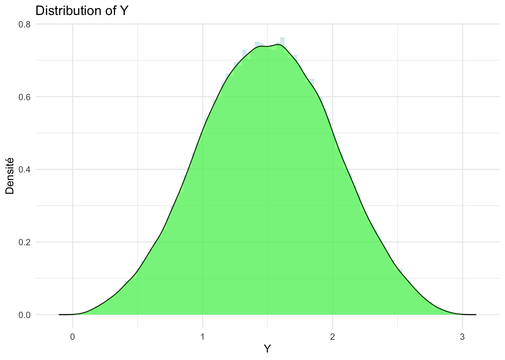
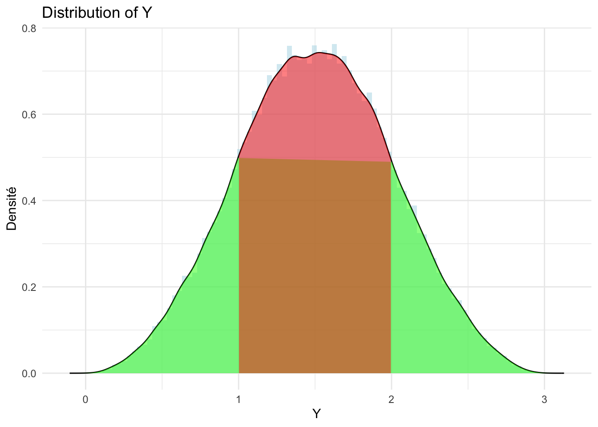
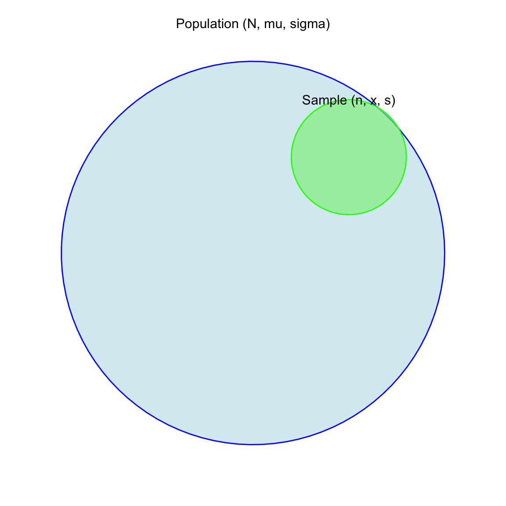
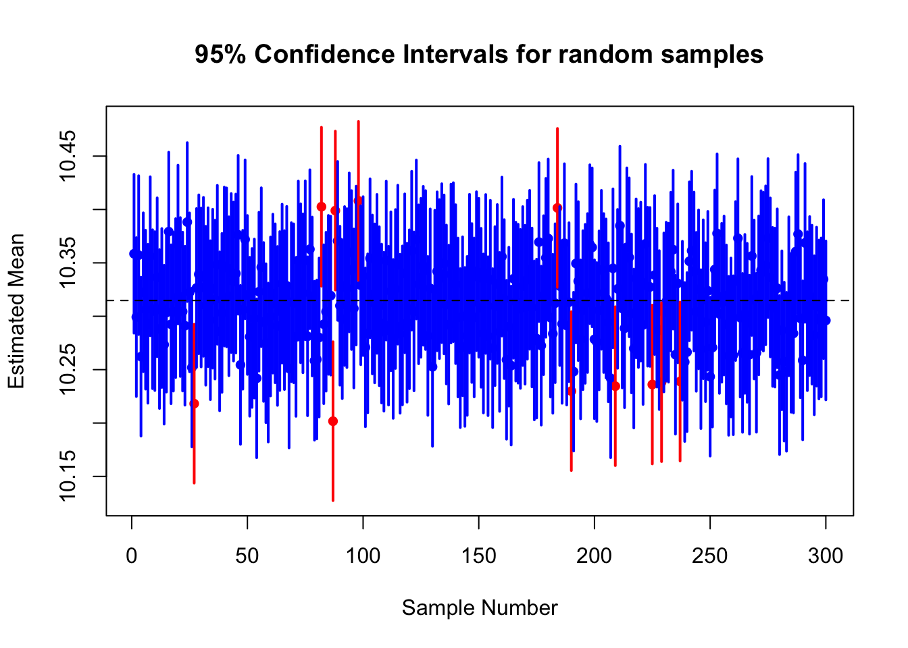
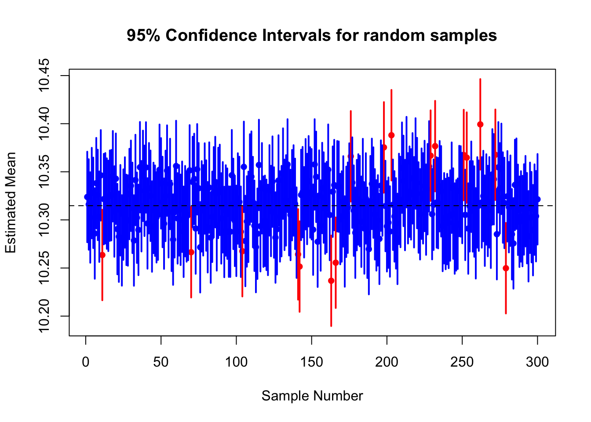
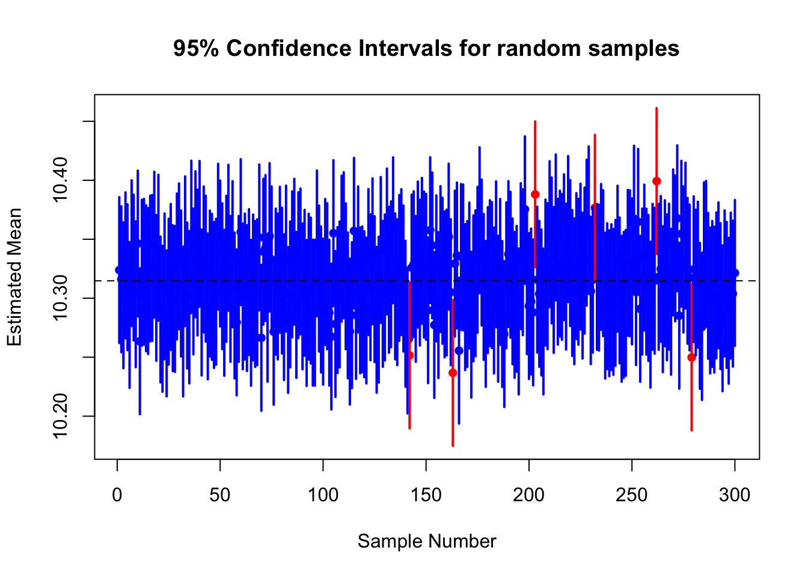
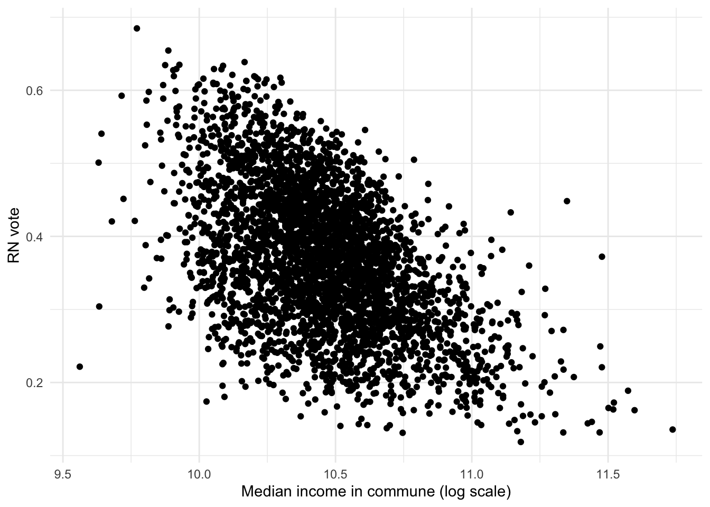
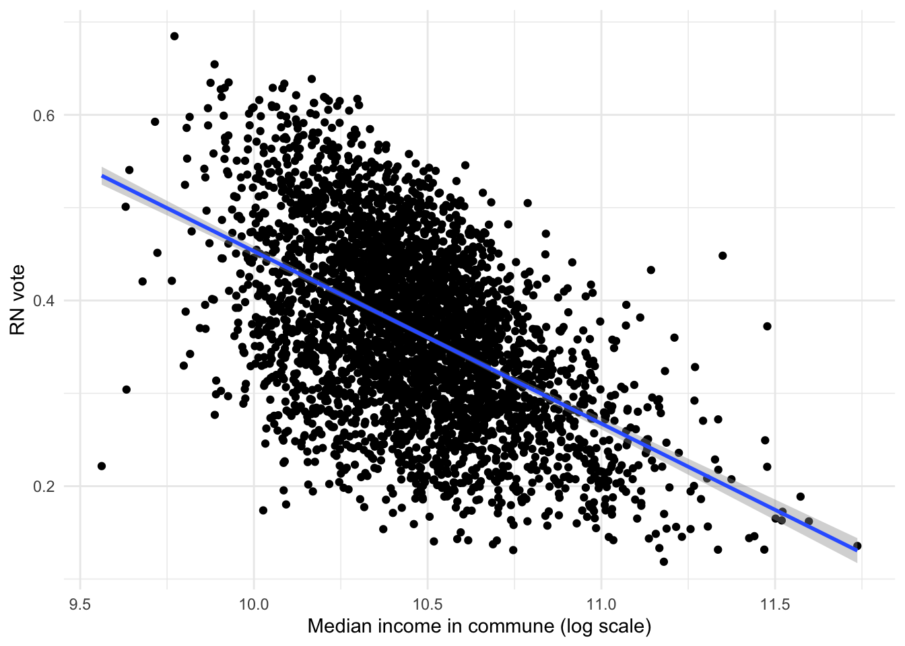

Methods for Research and Policy Evaluation
Session 2
General comments
- Your finals
- emphasis on the question, the identification strategy, the limitations
- NULL results are good too !
- The exercices of last session
- We will try to do 1h theory (code) + 1h exercices
Content
- Quick recap’
- Theory :
- Statistical inference
- T-tests
- OLS regression
- Exercices
Last session
- We saw
- Descriptive statistics
- mean, median, variance, standard deviation
- expectation, distribution
- probability density function
- How to code in R
summary(),IQR(),hist(),ggplot()+geom_density(),barplot()
Last session
- We saw for continuous variable \(P(Y\le Y_0)\) (here 52.503)
Last session
- And different distribution functions

The normal distribution
Attaching package: 'dplyr'The following objects are masked from 'package:stats':
filter, lagThe following objects are masked from 'package:base':
intersect, setdiff, setequal, union
The normal distribution
- Symmetric, not bounded, continuous
- mode = median = mean \[\begin{equation} f_N(x) = \mathcal{N}(x; \mu, \sigma) = \frac{1}{\sigma \sqrt{2\pi}} e^{-\frac{1}{2}(\frac{x-\mu}{\sigma})^2} \end{equation}\]
- standard normal distribution \[\begin{equation} \mathcal{N}(z; 0, 1) = \frac{1}{\sigma \sqrt{2\pi}} e^{-\frac{1}{2}(\frac{z}{1})^2} \end{equation}\]
The normal distribution
\[\begin{equation} \mathcal{N}(x; 1.5, 1) \end{equation}\]

The normal distribution
- \(P(1 \leq X \leq 2) = \int_1^2 N(x; 1.5, 1) \text{d}x = P(X \leq 2) - P(X\leq 1)\)

Statistical tables
- Integral difficult to compute…
- Take variable \((X- \mu)/\sigma= z\) \[\begin{equation} P(z \leq (2-1.5)/1) = P(z \leq 0.5) = P(X \leq 2) \approx 0.69 \end{equation}\]
- Refer yourself to the statistical tables !
Limitations
- Already gives hint on one variable
- but…
- complete information on population
- statistical inference
- what about relationships ?
- t-tests
- simple and multiple regression
- complete information on population
Statistical inference
Statistical inference
- Goal = find information on population based on sample

Statistical inference
- Goal = find information on population based on sample
- E.g. You want to estimate the average French income
- Asking every French person is difficult…
- Use a sample with reduced size !
Estimation of parameters
- In general you seek to evaluate key parameters of your distribution
- mean \(\mu\),
- standard deviation \(\sigma\)
- based on a sample
Confidence interval
- Yet your sampling procedure is random
- The mean of your sample, \(\bar{X}\), is a random variable that could be used to estimate the actual mean \(\mu\): \[\begin{equation} Z = \frac{\bar{x} - \mu}{\sigma / \sqrt{n}} \sim \mathcal{N}(0,1). \end{equation}\]
- the statistical tables allow you to find the desired level of confidence !
Confidence interval - knowing \(\sigma\)
- Yet your sampling procedure is random
- The mean of your sample, \(\bar{X}\), is a random variable that could be used to estimate the actual mean \(\mu\): \[\begin{equation} Z = \frac{\bar{x} - \mu}{\sigma / \sqrt{n}} \sim \mathcal{N}(0,1). \end{equation}\]
\[\begin{equation} \bar{x} - z_{1-\alpha/2}\,\frac{\sigma}{\sqrt{n}} \le \mu \le \bar{x} + z_{1-\alpha/2}\,\frac{\sigma}{\sqrt{n}} \end{equation}\]
Confidence interval
\[\begin{equation} \bar{x} - z_{1-\alpha/2}\,\frac{\sigma}{\sqrt{n}} \le \mu \le \bar{x} + z_{1-\alpha/2}\,\frac{\sigma}{\sqrt{n}} \end{equation}\]
- Intuitively, precision:
- increases with the size of sample \(n\),
- decreases with the variation in the population \(\sigma\) or \(s\)
- decreases with when your confidence level increases
Confidence interval - Example
- The average median income in French communes (log).
- You know \(\sigma\)
- \(\mu\) = ?
library(readxl)
data_dem <- read_excel("data/demographics2024.xlsx")
log_median_inc <- log(data_dem$revmoyfoy)
sig <- sd(log_median_inc, na.rm = TRUE)Confidence interval
- Sample of 40 communes
my_sample <- sample(log_median_inc, 40, replace = FALSE)
mean_x <- mean(my_sample, na.rm = TRUE)
sd(my_sample, na.rm =TRUE)[1] 0.2223448- with 95% confidence, your mean lies in :
mean_x - 1.96*sig/sqrt(40)[1] 10.26618mean_x + 1.96*sig/sqrt(40)[1] 10.41498mean(log_median_inc, na.rm = TRUE)[1] 10.31475Confidence interval
- The randomness is on the sampling process ! If you repeat the process N times…
- 95% of finding the actual mean within the interval !
- 5% of confidence intervals do not include the mean, due to randomness of sampling \(\bar{x}\) !
Confidence interval, 95%
plot_ci(log_median_inc, 40, 300, 1.960) #data, sample size, n° estimations, conf level
Sample size
plot_ci(log_median_inc, 100, 300, 1.960)
Confidence level
plot_ci(log_median_inc, 100, 300, 2.576)
Confidence interval - not knowing \(\sigma\)
- The std. deviation of population, \(\sigma\), unknown
- The mean of your sample, \(\bar{X}\), is a random variable following a Student’s law.
\[\begin{equation} \bar{x} \pm t_{1-\alpha/2,n-1}\,\frac{s}{\sqrt{n}}. \end{equation}\]
- The statistical tables allow you to find the desired level of confidence !
Hypothesis testing
- Null Hypothesis, \(H_0\) : the hypothesis we seek to check/test
- Alternative Hypothesis (\(H_a\)) : its negative
Mean estimation
- Null Hypothesis (\(H_0\)): The mean income is equal to 35,000€ in French communes : \(\mu = 35000\)
- Alternative Hypothesis (\(H_a\)): The population mean income is not equal to 35,000€.
# Sample data (assumed to be the log-transformed median income)
sample_data <- sample(log_median_inc, size = 150, replace = FALSE)# Sample data (assumed to be the log-transformed median income)
sample_data <- sample(log_median_inc, size = 150, replace = FALSE)
# Calculate sample mean and standard deviation
sample_mean <- mean(sample_data)
sample_sd <- sd(sample_data)
# Hypothesis test
mu_0 <- log(35000) # log-transformed value of 35,000€
t_test_result <- t.test(sample_data, #specify the data used
mu = mu_0, #the hypothesis on the mean
alternative = "two.sided",
conf.level = 0.95) #the value by default
# Display the result
t_test_result
One Sample t-test
data: sample_data
t = -10.386, df = 149, p-value < 2.2e-16
alternative hypothesis: true mean is not equal to 10.4631
95 percent confidence interval:
10.25798 10.32356
sample estimates:
mean of x
10.29077 - p-value : the probability of observing \(\bar{x} = 10.29077\) (or even more extreme), if the true population mean is actually 10.4631.
- here \(<2.2e^{-16}\)
- you reject the null hypothesis: your mean is not 35k€
Mean comparison
- Also allows to look at the impact of categorical variables on estimates !
- Testing \(\mu_1 = \mu_2\)
- Null Hypothesis (\(H_0\)): The population means for urban and rural areas are equal, \(\mu_1 = \mu_2\) (or \(\mu_1 - \mu_2 = 0\))
- Alternative Hypothesis (\(H_a\)): The population means for urban and rural areas are different: \(\mu_1 != \mu_2\).
# Split data by urban and rural communes
urban_income <- sample(log((data_dem %>% filter(dens == "Urbain dense" | dens == "Urbain intermédiaire"))$revmoyfoy), 150, replace = FALSE)
rural_income <- sample(log((data_dem %>% filter(dens == "Rural"))$revmoyfoy), 150, replace = FALSE)
# Perform a two-sample t-test
t_test_urban_rural <- t.test(urban_income,
rural_income,
alternative = "two.sided",
var.equal = FALSE,
conf.level = 0.95)
# Display the result
t_test_urban_rural
Welch Two Sample t-test
data: urban_income and rural_income
t = 3.9075, df = 292.75, p-value = 0.0001159
alternative hypothesis: true difference in means is not equal to 0
95 percent confidence interval:
0.05493876 0.16644186
sample estimates:
mean of x mean of y
10.44437 10.33368 - your p value measures the probability of obtaining \(\mu_1 - \mu_2\) as extreme as \(10.44-10.33\), if it was \(0\)
- below 5% : you reject the null
Regressions
Back to our initial puzzle
- \(Y \leftarrow X\)
t.test()allows you to analyse :- effect of categorical independent variables (being urban/rural)
- on continuous dependent variable (income)
- what about continuous vs. continuous variables ?
- e.g. far-right votes (%) (Y) by income (X) ?
Towards simple regression
- Once you have decided of a Y (dependent variable) and X (independent variables), you can draw a cloud of points
library(ggplot2)
library(tidyverse)── Attaching core tidyverse packages ──────────────────────── tidyverse 2.0.0 ──
✔ forcats 1.0.1 ✔ readr 2.1.6
✔ lubridate 1.9.4 ✔ stringr 1.6.0
✔ purrr 1.2.0 ✔ tibble 3.3.0
── Conflicts ────────────────────────────────────────── tidyverse_conflicts() ──
✖ dplyr::filter() masks stats::filter()
✖ dplyr::lag() masks stats::lag()
ℹ Use the conflicted package (<http://conflicted.r-lib.org/>) to force all conflicts to become errorslibrary(rio)
elections2024 <- import("data/elections2024.csv")
socio_demo <- import("data/demographics2024.xlsx")
elections2024 <- elections2024 %>% left_join(socio_demo %>% mutate(codecommune = as.numeric(codecommune), codedep = as.numeric(codedep)))Warning: There were 2 warnings in `mutate()`.
The first warning was:
ℹ In argument: `codecommune = as.numeric(codecommune)`.
Caused by warning:
! NAs introduced by coercion
ℹ Run `dplyr::last_dplyr_warnings()` to see the 1 remaining warning.Joining with `by = join_by(codecommune, codedep, Year)`Towards simple linear regression
elections2024 %>%
filter(dens == "Urbain intermédiaire") %>%
ggplot(aes(x = log(revmoyfoy), y = far_right_relvotes)) + geom_point() + labs(y = "RN vote", x = "Median income in commune (log scale)") +theme_minimal()
Simple linear regression model
library(ggplot2)
elections2024 %>%
filter(dens == "Urbain intermédiaire") %>%
ggplot(aes(x = log(revmoyfoy), y = far_right_relvotes)) + geom_point() + labs(y = "RN vote", x = "Median income in commune (log scale)") + geom_smooth(method = "lm") +theme_minimal()`geom_smooth()` using formula = 'y ~ x'
Simple linear regression model
- Your relation between your two variables : \[\begin{equation} Y_i = f(X_i) + \epsilon_i \end{equation}\]
- A linear function of \(X\) is simply a function that associates a constant value \(\beta\) such that each increase \(\Delta X\) produces a \(\beta \Delta X\) on Y, so that \(\Delta Y = \beta \Delta X\). In other words, \(f(X, \epsilon) = \beta_0 + \beta_1 X+\epsilon\). \[\begin{equation} Y_i = \beta_0+\beta_1 X_i + \epsilon_i \end{equation}\]
Simple linear regression model
- We want \(\beta\) (or \(f\)) that minimises the error \(\epsilon\): \[\begin{equation} \sum_i^N \epsilon_i^2 = \sum_i^N(Y_i - \beta_1 X_i - \beta_0)^2 = S(\beta_0, \beta_1) \end{equation}\]
- This will give us the line that best fits the data
- “Ordinary Least Squares” (OLS)
Visualising the errors
library(ggplot2)
library(dplyr)
library(ggplot2)
df_plot <- elections2024 %>%
filter(dens == "Urbain intermédiaire") %>%
mutate(x = log(revmoyfoy)) %>%
mutate(
y_hat = predict(
lm(far_right_relvotes ~ x, data = .)
)
)
ggplot(df_plot, aes(x = x, y = far_right_relvotes)) +
geom_point() +
geom_segment(
aes(
xend = x,
yend = y_hat
),
color = "red",
alpha = 0.5
) +
geom_smooth(method = "lm", se = FALSE) +
labs(
y = "RN vote",
x = "Median income in commune (log scale)"
) +
theme_minimal()`geom_smooth()` using formula = 'y ~ x'
Linear regression in R
- Linear estimator is present in base R, it’s called
lm summarygives you the values
elec_urbin <- elections2024 %>% filter(dens == "Urbain intermédiaire")
model1 <- lm(data = elec_urbin, far_right_relvotes ~ log(revmoyfoy))
summary(model1)
Call:
lm(formula = far_right_relvotes ~ log(revmoyfoy), data = elec_urbin)
Residuals:
Min 1Q Median 3Q Max
-0.312869 -0.059556 0.000578 0.061612 0.245735
Coefficients:
Estimate Std. Error t value Pr(>|t|)
(Intercept) 2.310232 0.054997 42.01 <2e-16 ***
log(revmoyfoy) -0.185713 0.005257 -35.33 <2e-16 ***
---
Signif. codes: 0 '***' 0.001 '**' 0.01 '*' 0.05 '.' 0.1 ' ' 1
Residual standard error: 0.08438 on 3490 degrees of freedom
Multiple R-squared: 0.2634, Adjusted R-squared: 0.2632
F-statistic: 1248 on 1 and 3490 DF, p-value: < 2.2e-16Interpretation of linear regression in R
- Intercept : predicted value when predictors = 0
- Estimate
- sign
- magnitude
- Significance levels : compares with \(\beta_1 = 0\) (Null hypothesis)
- t-value (\(df>1000\)) : \(t_{.90} = 1.645\), \(t_{.95} = 1.96\), \(t_{.99} =2.58\)
- p-value : probability of obtaining such t-stat with \(\beta_1 = 0\)
Multiple linear regression
- But is that only an effect of income ?
- Income is also correlated with many other variables, e.g. :
- % University graduates (interval)
- Location (categorical)
- Omitted variable bias.
- Need to add predictors !
Multiple linear regression
elec_urbin <- elections2024 %>% mutate(psup = if_else(pact > 0, sup / pact, NA_real_))
model2 <- lm(data = elec_urbin %>% filter(dens == "Urbain intermédiaire"), far_right_relvotes ~ log(revmoyfoy) + psup)
summary(model2)
Call:
lm(formula = far_right_relvotes ~ log(revmoyfoy) + psup, data = elec_urbin %>%
filter(dens == "Urbain intermédiaire"))
Residuals:
Min 1Q Median 3Q Max
-0.30604 -0.05640 -0.00183 0.05605 0.35688
Coefficients:
Estimate Std. Error t value Pr(>|t|)
(Intercept) 1.663218 0.059892 27.77 <2e-16 ***
log(revmoyfoy) -0.116205 0.005913 -19.65 <2e-16 ***
psup -0.112047 0.005232 -21.41 <2e-16 ***
---
Signif. codes: 0 '***' 0.001 '**' 0.01 '*' 0.05 '.' 0.1 ' ' 1
Residual standard error: 0.07934 on 3489 degrees of freedom
Multiple R-squared: 0.349, Adjusted R-squared: 0.3486
F-statistic: 935.1 on 2 and 3489 DF, p-value: < 2.2e-16- Adding a single predictors considerably decreases the effect of income !
Correlation, causality
- A correlation = two phenomena moove together,
- useful to describe, predict, formulate hypotheses
- yet not causal ! (e.g. ice cream sales and shark attacks)
- A correlation can also be completely spurious

Causality
- One phenomenon causes the other:
- 5 rules :
- Does the cause come before the effect ?
- Is there a possible alternative explanation ?
- Does the relationship hold in different contexts ?
- Is the effect measured after the cause appears ?
- Could the effect actually be the cause ?
Exercices
Exercice 1
In this exercise, we are interested in understanding what explains trust in parliament (trstprl). The main factors considered are Education level (eduyrs), Political interest (polintr), Media Use (tvtot, netusoft);
Exercice 2
The Chapel Hill expert survey data is a survey that “provides information about the positioning of the leadership of 279 parties in 31 countries over the course of 2024 on ideology, policy, populism, democracy, European integration, and select EU policy questions. Country coverage includes all European Union member states except for Luxembourg – plus Iceland, Norway, Switzerland, Turkey, and the United Kingdom.2 The dataset adopts the country code and party id schema of the CHES Trend file (Jolly et al. 2022) and the Speed CHES survey on Ukraine (Hooghe et al. 2024) with extensions for newly covered parties” (see documentation of CHES).
Exercice 3
You are provided with data about the legislative and the presidential elections in France, in 2022, as well as socio-demographic data on French communes in 2022, for LR (coded as “right”) and RN (“far-right”).